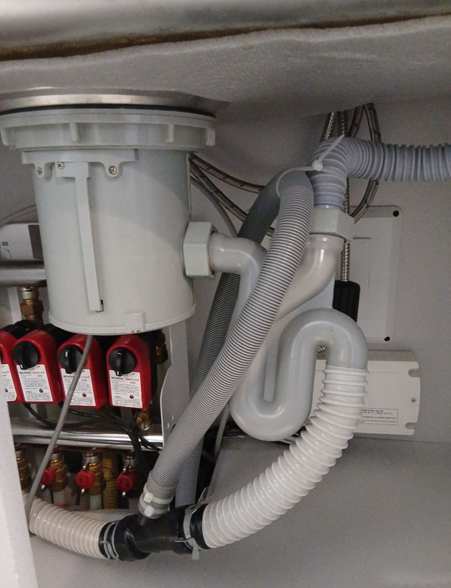
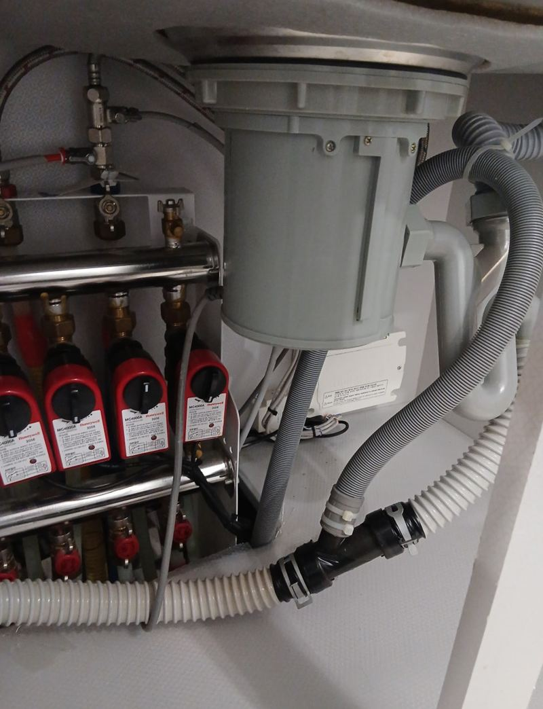
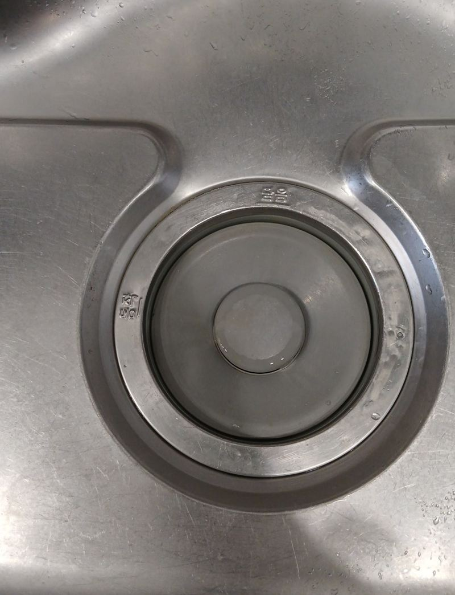
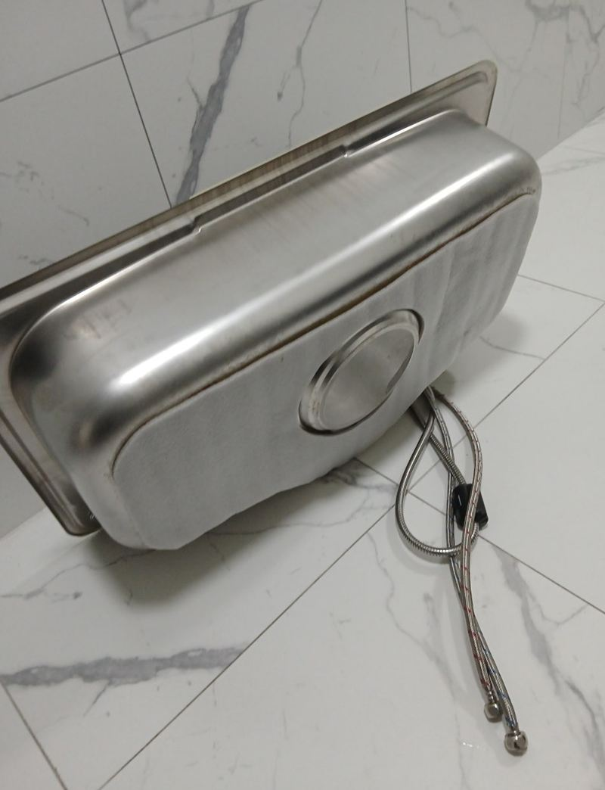
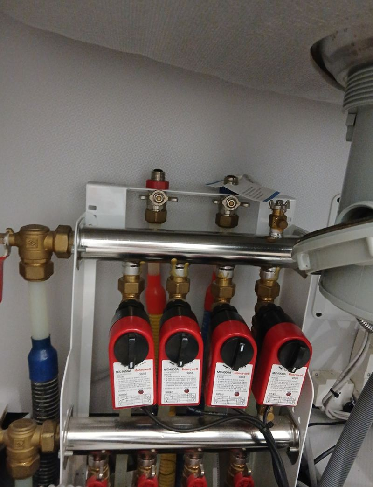
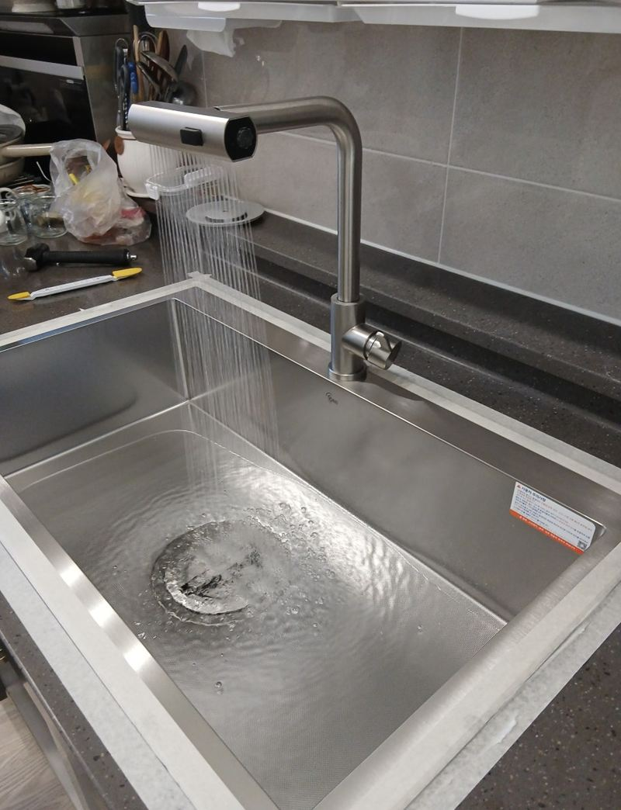
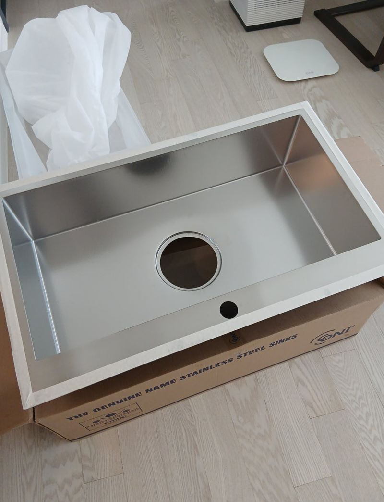
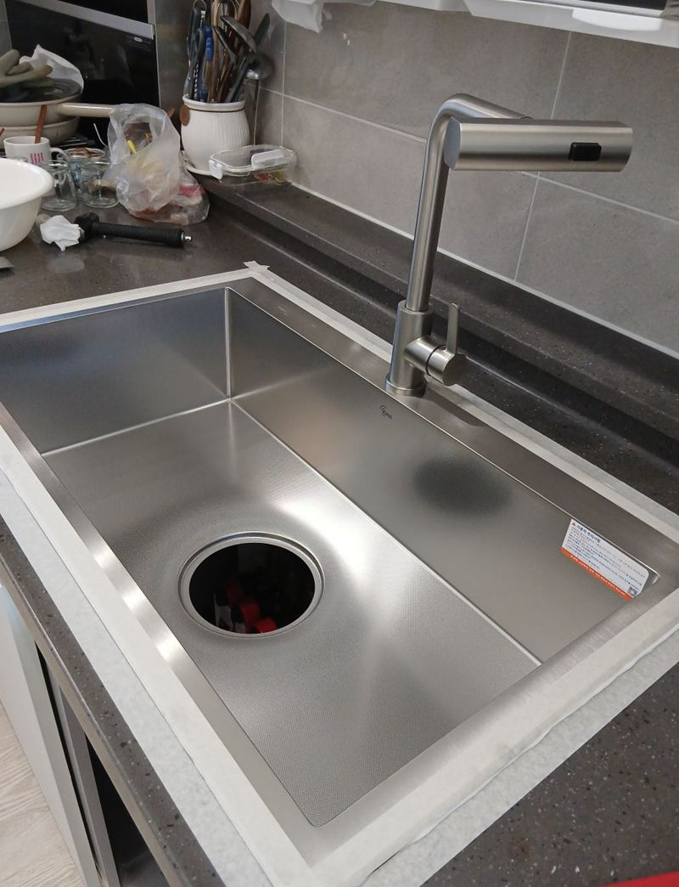

마포 사각 싱크볼만 교체 비용과 장점
← 밀어서 전후 비교 →
아무리 닦아도 얼룩이 남고, 물이 천천히 빠지고, 배수구에서는 냄새가 올라오는 싱크볼이었어요. 가장자리 실리콘이 벌어져 상판 아래로 물이 스며든 흔적도 있었어요. 싱크대 전체는 그대로 두고 싱크볼만 바꿨는데, 고객님 말씀으로는 "주방 분위기가 완전히 달라졌다"고 하셨어요.
싱크볼만 바꾸는 게 가능한 이유
싱크볼은 상판에 뚫린 구멍에 얹히거나 붙어 있는 부품이라, 상판과 하부장이 멀쩡하면 볼만 떼어 내고 바꿀 수 있어요. 관건은 새 볼이 지금 구멍 크기에 맞는지예요. 맞으면 작업이 간단하고, 다르면 상판을 더 자르거나 남는 틈을 메워야 해요.


철거부터 배수 테스트까지
-
물 잠그고 배관 분리
급수를 잠그고 남은 물을 뺀 뒤 배수관과 급수관을 풀었어요.

-
실리콘 걷고 볼 들어내기
둘레 실리콘을 칼날로 걷어 내고 상판이 상하지 않게 볼을 들어 올렸어요. 남은 실리콘과 때를 깨끗이 지워야 새 볼이 들뜨지 않아요.


-
새 사각 볼 수평 맞춰 앉히기
이 집 상판은 살짝 비대칭이라 레이저 레벨기로 줄을 맞춘 뒤 앉혔어요. 볼 아래 방음 패드가 물 떨어지는 소리를 줄여 줘요.


-
배수 테스트
물을 받아 한 번에 빼며 유속과 연결부 누수를 확인했어요.

둥근 볼에서 사각 볼로, 달라지는 점
| 예전 둥근 볼 | 엠보 사각 볼 | |
|---|---|---|
| 바닥 면적 | 모서리가 둥글어 실제 쓰는 면이 좁음 | 네모 끝까지 써서 큰 냄비도 쉽게 들어감 |
| 표면 | 매끈해서 긁힘이 잘 보임 | 오돌토돌한 엠보라 흠집·물때가 덜 보임 |
| 소음 | 패드가 없으면 물소리가 큼 | 하부 방음 패드로 소리가 줄어듦 |
교체 후 오래 쓰려면
실리콘은 방수층 역할을 해요. 너무 두껍게 바르면 금방 떨어지고, 얇게 끊기면 그 틈으로 물이 스며요. 방수·곰팡이 방지용 중성 실리콘을 일정한 두께로 둘렀어요. 쓰실 때는 일주일에 한 번 중성세제로 닦아 주시면 변색을 줄일 수 있어요.
싱크볼 교체를 생각할 때
- 볼 가장자리 실리콘이 까맣게 변했어요곰팡이가 핀 실리콘 아래로 물이 스며들고 있을 수 있어요. 교체할 때 새로 둘러요.
- 물이 천천히 빠지고 냄새가 나요배수구와 트랩이 낡은 경우가 많아서 볼과 함께 바꾸면 한 번에 정리돼요.
- 큰 냄비가 안 들어가요둥근 볼을 사각 볼로 바꾸면 같은 자리에서도 쓰는 면적이 넓어져요.
- 이사 들어가기 전에 바꾸고 싶어요짐이 없을 때 하부장을 비우기 쉬워서 작업이 수월해요.
싱크볼 교체 질문
새 싱크볼은 제가 사도 되나요?
네, 구매 전에 지금 볼의 안쪽 치수와 상판 구멍 크기를 재서 알려주시면 맞는지 봐 드려요.
수전도 같이 바꿔야 하나요?
수전이 상판에 달려 있고 오래됐다면 같이 바꾸는 게 효율적이에요. 멀쩡하면 다시 연결해서 써요.
배수구 냄새도 해결되나요?
배수구와 트랩을 새로 달면 냄새가 줄어드는 경우가 많아요. 배관 안쪽 문제라면 따로 확인이 필요해요.
싱크볼 교체 시간은 얼마나 걸리나요?
구멍 크기가 맞는 경우와 상판을 다듬어야 하는 경우가 달라요. 실리콘이 굳는 시간도 있어서 당일 바로 물을 쓰는 건 피하시는 게 좋아요.
언더형과 올림형은 뭐가 달라요?
언더형은 상판 아래에 붙여 턱이 없고 닦기 편해요. 올림형은 상판 위에 걸치는 방식이라 교체가 비교적 간단해요.
탈수기·음식물 거름망도 같이 달 수 있나요?
네, 이 현장도 새 볼에 맞는 배수구와 탈수기를 연결했어요. 쓰시던 부속이 맞는지 같이 봐요.
싱크볼 바꾸면서 상판 들뜬 것도 잡아 주나요?
물이 스며 상판이 살짝 떠 있던 이 현장처럼, 볼을 뺀 김에 상판 고정과 실리콘을 다시 잡아 정리해요.
사각 볼은 청소가 더 어렵지 않나요?
모서리가 둥글게 처리된 제품이 많아서 생각보다 닦기 편해요. 엠보 표면은 물때도 덜 보여요.
다른 싱크볼·수전 현장
지금 싱크볼 위에서 찍은 사진과 하부장 안 배관 사진을 보내 주세요.
전화 상담 010-4517-9872